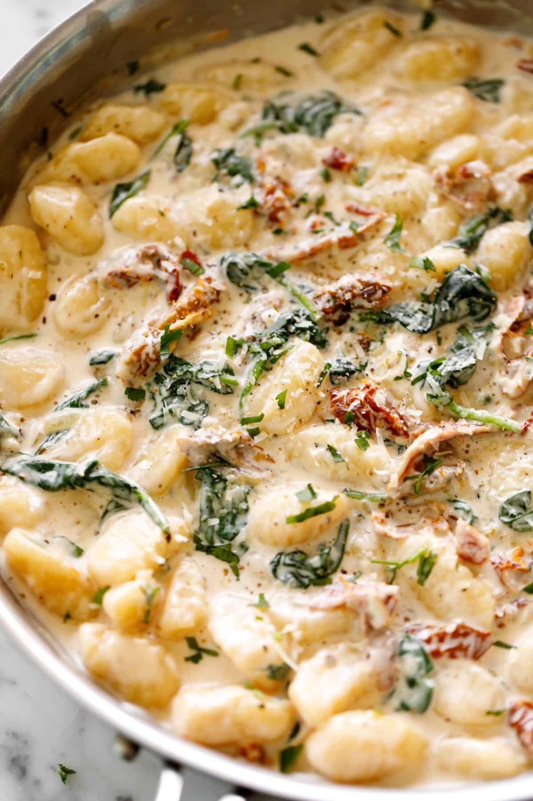

Creamy tuscan gnocchi

A not so simple dish. Ole could rock this tho.
Delicious and I want this every day every night!
Ingredients
- 2 tablespoons butter, (or olive oil)
- 1 brown shallot, chopped (or 1 small onion)
- 4 cloves garlic, minced
- (500 g) uncooked potato gnocchi
- 1/2 cup jarred sun dried tomato strips in oil
- 1/2 cup chicken broth
- 1 1/4 cups heavy cream
- 1 teaspoon dried Italian herbs
- 1 1/2 cups fresh baby spinach
- 1/2 cup fresh grated parmesan cheese
- 2 tablespoons fresh chopped basil
Steps
- Heat a large skillet over medium-high heat. Melt the butter and sauté shallots until transparent, about 2 minutes. Sauté garlic until fragrant, about 30 seconds.
- Add the gnocchi and let sear in the butter for a minute. Add the sun dried tomatoes and reserved oil. Cook for a further minute to release flavours into the gnocchi.
- Pour in the chicken broth, cream and Italian herbs. Scrape up any browned bits from the bottom of the pan.
- Season with salt and pepper to taste. Mix everything together and reduce heat to medium. Cover pan with lid and let cook for 5 minutes.
- Stir in the spinach leaves and cook until wilted, about 1 minute.
- Stir through parmesan cheese and chopped basil. Let simmer for a further minute or until gnocchi is soft, cooked through and the sauce has thickened to your liking.
- Season with a little extra salt & pepper, if needed, to suit your taste.